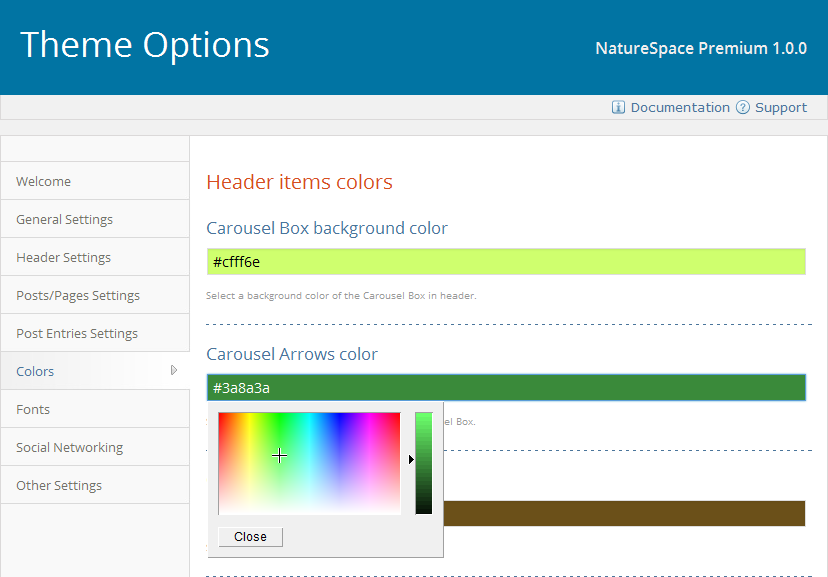
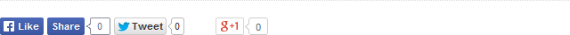
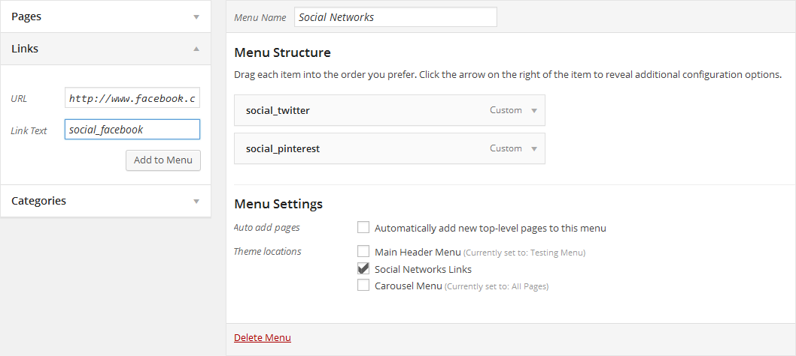

Created: 21/09/2014
By: Tomas Toman
Web: www.tomastoman.cz
First of all, I would like to thank you for choosing NatureSpace! I firmly believe that you will be satisfied with this theme. In case of any problems or doubts, you can use the NatureSpace Official Support (in English, German or Czech).
Thanks so much!
NatureSpace is an easily customizable WordPress multipurpose theme. It is a minimalistic, fully responsive and Retina ready theme that allows for easy viewing on any device. Using Theme Options panel, you can customize this theme directly to your needs. NatureSpace is fully compatible with the popular WooCommerce plugin.
Compatible Browsers: Internet Explorer 8+, Google Chrome, Mozilla Firefox, Opera, Safari
Compatible WordPress Versions: 3.8+
For NatureSpace installation, you must follow these basic steps:
Alternatively, you can install this theme via your WordPress administration. Go to "Appearance > Themes" panel and using "Add New" tool upload the original ZIP file. After uploading, activate the theme.
Once you have purchased the NatureSpace Premium Version, simply upload the extracted folder that you have got by purchasing NatureSpace Premium Version via FTP to "wp-content/themes" directory on your web host server.
Alternatively, you can install the Premium Version via your WordPress administration:
The options framework is available through the panel "Appearance > Theme Options".
This tab is used for choosing one of the basic color schemes and setting some parts of your website (layout style, right sidebar and breadcrumb navigation displaying, favicon).
Under this tab, you can choose between Centered or Wide header layout. It will affect displaying of your Site Title/Header Logo and the Main Header Menu.
If you want to display your custom Logo instead of the Site Title, simply upload or choose your logo image in "Theme Options > Header Settings > Logo URL". For removing the Logo and setting the Site Title again, simply delete the URL address of your Logo in "Theme Options > Header Settings > Logo URL".
If you are using the Wide header layout, you can set here a width of the Title and Menu boxes. The sum of both values always should be 100%.
In the "Carousel Box Settings" section, you can find the options for setting the Carousel Box which can display an infinite slider with your latest posts or a custom menu (which you have previously created and assigned to the "Carousel Menu" location in "Appearance > Menus" panel). (only in Premium Version available)
In the "Contact Information" section, you can fill out your address, email, phone number and Skype name to be displayed above the Site Title/Logo.
In the "Homepage Header Image" section, you can set a headline and a text button displayed in the middle of your homepage header image.
Under this tab, you can set displaying of the related posts, featured images and meta data on the individual single posts. You also can disable here displaying of the featured images on the static pages.
Under this tab, you can set displaying of the Post Entries in your Blog and on the Archive/Search results pages. There are 2 different layouts for the Post Entries in NatureSpace theme:
In the Premium Version, you can set here the number of columns for the Masonry Grid (2, 3 or 4) and a Hover effect for the Featured Images (Fade, Focus, Shadow or Tilt).
You also can set here if you would like to display the full Content or only the Excerpts (first 40 words of each post) within the Post Entries and the size of Featured Images displayed in the One Column layout (Small or Large).
This tab is used for setting your own color scheme. You can choose here the colors of individual parts of layout, headlines and texts. Using color pickers, you can easily choose exactly that color you want. You also can directly enter the hexadecimal code of your favorite color.
Tip: If you want to use the same color for more items, simply copy and paste its hexadecimal code instead of setting it using color pickers on each item.
Color settings panel
This tab is used for selecting Google fonts for the individual headlines and text areas. NatureSpace theme offers more than 200 fonts for choosing. The default fonts are specified in the main stylesheet file (style.css in the main theme folder).
In the Premium Version, you also can set the font-size of some specific headlines and text areas.
On this tab, you can choose wheter to display or not the Facebook, Twitter and Google+1 share buttons, which may appear below your single posts/pages content and on the post entries. You also can set here a language of the Share buttons.
Social networks sharing panel
On this tab, you can fill your own cascading style sheet information (CSS) for modifying the layout. So you do not need to write your custom CSS straight into the "style.css" file in the main theme folder or create a child theme. The CSS information defined on this tab appears in the "head" section of source code.
Above the Custom CSS field, there are links for editing widgets, header image, main background and menus.
For setting your own main background image or color, go to "Appearance > Background" panel. Upload your own photography and set here all the background-image settings (position, repeating, attachment). For setting one-color background, use the color picker at the bottom of this page. To make the selected color visible, there should not be set any background image.
For setting your custom header image, go to "Appearance > Header" panel and upload or select your own image. For properly displaying on wide-screen monitors in the Wide layout, the width of your header image should be about 1800 pixels. The recommended width for the Boxed layout is 1020 pixels. If the header image width is smaller than the page container width, the image will be displayed in the middle of the browser window with gray margins on both sides.
In "Theme Options > Header Settings > Display Header Image", you can set the header image to be visible on all pages, on all pages except the homepage or only on the homepage.
For making this feature available, the bundled Cyclone Slider 2 plugin has to be installed. For creating a new Slideshow, go to the "Cyclone Slider" panel in your WordPress administration. After creating a slideshow, go to the Widgets settings. The widget area for displaying Homepage slideshow is reserved for one "Cyclone Slider Widget". Its name in "Appearance > Widgets" panel is "Homepage slideshow". Put here one "Cyclone Slider Widget" and choose the slideshow you want to display on your homepage. After doing it, your slideshow will automatically replace the header image on your homepage.
There are several areas for displaying widgets in NatureSpace Theme:
The Widget panel is located in "Appearance > Widgets" panel. If you want to place a widget into a widget area, simply drag its panel and drop it to the area where you want to display the widget.
NatureSpace Premium theme also allows you to create custom Right Sidebars and Footers which can replace the default widget areas on the individual pages/posts. See this paragraph for more information.
Right Sidebar widget area is displayed on all your pages and posts. Its name in "Appearance > Widgets" panel is "Right Sidebar". You can put here as many widgets as you like.
If you do not want to display the Right Sidebar on your pages/posts, you can hide it globally in "Theme Options > General Settings > Display Sidebar on Posts/Pages".
If you do not want to display the Right Sidebar on your archive pages (including all archives, blog page and search results), you can hide it in "Theme Options > General Settings > Display Sidebar on Archives".
Footer widget area is displayed in the footer as the 3 columns of widgets. In "Appearance > Widgets" panel, you can see 3 areas for the individual columns: "Footer left widget area", "Footer middle widget area" and "Footer right widget area". These areas represent the 3 columns of widgets in footer. You can put as many widgets as you want into each column.
The widget area for copyright and other notices is displayed in the footer, below the main Footer widget area (described above). Its name in "Appearance > Widgets" panel is "Footer notices". Put here one "Text" widget. Into the content field of this widget fill the text (or HTML code) you want to display here. The "Title" field of this Text widget should stay empty.
Note: To display the Footer notices in the middle of the box, check the option "Automatically add paragraphs" at the Text widget inserted into this area.
The widget area for displaying Homepage slideshow is reserved for one "Cyclone Slider Widget". Its name in "Appearance > Widgets" panel is "Homepage slideshow". Put here one "Cyclone Slider Widget" and choose the slideshow that you want to display on your homepage.
For making this feature available, the Cyclone Slider 2 plugin has to be installed. For creating a new Slideshow, go to the "Cyclone Slider" panel in your WordPress administration. After creating the Slideshow, go to the Widgets settings and follow the steps described above.
NatureSpace Premium theme offers 13 custom widgets altogether:
NatureSpace Posts Widgets allow to display the latest posts from the specific categories on any page using the bundled Page Builder. You can choose from 6 different NatureSpace Posts Widgets:
This widget is ready to use for displaying the Facebook Like Box. The Like Box is a special version of the Like Button designed only for Facebook Pages. Using this widget, you can easily promote your Facebook page on your website.
Put NatureSpace Facebook Like Box Widget into the Sidebar or Footer widget area in "Appearance > Widgets" panel and fill the full URL of your Facebook Page that will be liked. Then set a height of Like Box and specify whether to display the profile photos of people who like the Page and a stream of the latest posts by the Page.
This widget is ready to use for displaying the Twitter Follow button. Put NatureSpace Twitter Widget into the Sidebar or Footer widget area in "Appearance > Widgets" panel and fill the Twitter username you want to display via Twitter Follow button.
This widget is ready for displaying full-screen image sections using the Page Builder. Before using this widget, you will need to upload the requested background image through "Media > Add New" panel. After uploading, simply copy the "File URL" (not the "Permalink"!) into the "Image:" field of a NatureSpace Box-Image widget. Then fill the other fields according to your needs (Title, Subtitle, Button link and Text).
You also can set some properties of the Image-Box: box height (in pixels), background image size (cover or auto) and scrolling (whether the background image should be scrolled or fixed for creating a parallax effect).
IMPORTANT NOTE: For correct displaying of the Image-Box, you must set the "Full Screen (Page Builder)" page template for that page and the "NatureSpace - full screen" Visual Style for a Row where you have inserted this widget. For more information about the Page Builder, please read this paragraph.
This widget is ready for displaying a text box with a custom link and a header icon. You can insert this widget into the Right Sidebar or into the content of a static page using the Page Builder.
To display an icon beside the headline, just insert the class name of the desired icon into the "Icon:" field (for example: arrow_up). Here is the list of all supported icons and their class names:
This widget is ready for displaying a box with your custom image, title, subtitle and text. You can insert this widget into the Right Sidebar or into the content of a static page using the Page Builder.
This widget is ready for displaying a headline of a section created with the Drag-and-drop Page Builder (for example, you can specify the headline for section of NatureSpace Box-Info Widgets using this widget).
Note: This widget is designed for inserting into a separate Row in the Page Builder, so the other widgets should be inserted into a different Row below the separate NatureSpace Section-Headline Row.
This widget is ready for displaying the popular posts, recent posts, comments and tags in tabbed format in your sidebar.
In NatureSpace theme, there are 3 menu areas (only 1 in the Free version):
At first, create a new menu in "Appearance > Menus" panel and assign it to the "Main Header Menu" location. Then, in the left panels choose required pages/categories or custom links and add them to your new Menu. Then save all changes.
If you want to create a drop-down submenu, just drag the required menu item and move it more to the right against its parent item. When you drop your sub-item, it should stay with indentation against the parent item. This way you can create unlimited levels of submenus.
This menu location is designed for managing your social networks profile links, which will be displayed as icons in the header section. Here is a guide how to set this menu:
As the "Link Text" field for the Social Networks Links menu is designed only for inserting class names of icons, all other texts filled here will not be displayed.
Social Networks Links menu settings
This menu location is designed for displaying an infinite slider containing a custom navigation links in the header. Once you assign a menu to the Carousel Menu location, you need to go into "Theme Options > Header Settings > Carousel Content" and set here the value "Carousel Menu", because the Carousel Box by default displays your latest posts.
Note: The Carousel Menu is not designed for displaying any submenus.
Beside Default Template, NatureSpace offers 7 other custom Page templates (only 3 in the Free version available). If you create a new page or edit some existing page, you can choose the Page template in "Page Attributes > Template" right panel.
"Sitemap" Page template is ready for displaying your sitemap page. If you want to use it, the bundled Dagon Design Sitemap Generator plugin has to be activated. The sitemap options can be specified in "Settings > DDSitemapGen" panel.
If you want to display only some pages without the right sidebar, simply use this template for these pages.
This template displays the page in the same way as the "Full-width" template, but it will not display the Facebook, Twitter and Google+1 share buttons. It could be useful for creating pages using the Drag-and-drop Page Builder.
This template displays the page in the same way as the "Default" template, but it will not display the Facebook, Twitter and Google+1 share buttons. It could be useful for creating pages using the Drag-and-drop Page Builder.
This template displays only the page Content without the page Title.
This template displays only the page content without the menus, right sidebar, comments area and the footer widget areas. You can use it for creating a temporary home page before your website will be ready for the public launch.
This template is designed only for working with the Page Builder. You have to set this template when you are using the NatureSpace Box-Image Widget.
Post Formats is a feature which allows you to set different layouts for the posts. You can choose a Post Format from a radio-button list when you create/edit a post. Beside the Standard posts, the following Post Formats are supported in NatureSpace Premium theme:
The "Aside" posts are displayed in the same way as the Standard posts, but without the Post title.
The "Audio" posts are ready for displaying an audio file (mp3, ogg or wav) in their content. If you insert an audio file using the WordPress Audio shortcode, the audio player will be automatically displayed in the Post Entry (on your archive pages) at the place of the post content/excerpt.
Audio Shortcode example: [audio src="audio-source.mp3"]
The "Image" posts are displayed in the same way as the Standard posts, but the Post Entries are displayed differently - they display only the Featured Image, which serves as a link to the full post. If there is no Featured Image, the first image from the post content will be automatically used instead of it.
The "Status" posts are displayed in the same way as the Standard posts, but without the Post title. In the Post Entries, there are automatically displayed the first 140 characters from the post content (in italics) instead of the full post content/excerpt.
The "Video" posts are ready for displaying a video frame (with a video hosted on YouTube, Vimeo, WordPress.tv, etc.) in their content. You also can set a video frame to be displayed instead of the Featured Image. To do it, just insert its full URL address into the field "Video Thumbnail" under the Visual Editor when you create/edit a post. The Video Thumbnail will be displayed also within the Post Entry.
Note: The "Video Thumbnail" field is visible on all posts, but it can be displayed only if the "Video" Post Format is set.
Examples of all supported Post Formats displayed as the Masonry - Grid Post Entries
Using Drag-and-drop Page Builder, you can simply create your own page layouts. Working with Page Builder is as easy as managing widgets in "Appearance > Widgets" panel. By default (if all the NatureSpace bundled features are active), the Page Builder contains 39 widgets altogether:
If you have installed some plugins offering their own custom widgets, they will be probably also included into the Page Builder widgets offer.
Page-layout created by the Drag-and-drop Page Builder
Tip: If you do not want to display the Share Buttons on some page, just select the "Page without Share Buttons" or "Full Width without Share Buttons" page template instead of the Default Template.
If you would like to display different Right Sidebars or Footers on some specific pages, the bundled "Custom Sidebars Manager" plugin has to be installed. It gives you unlimited ability to replace the default Right Sidebar and Footer widget areas on every page/post by different widget areas.
If you go into "Appearance > Custom sidebars", under the tab "Default Sidebars" you will be able to set your custom sidebars according to the post type and category (for example, you can set different sidebars for all posts and for all pages).
Some functions of NatureSpace theme are conditioned by installing some plugins. If some of the recommended plugins are inactive, you can see them in "Appearance > Install Plugins" panel.
List of recommended plugins for the Free version:
If you want to display the breadcrumb navigation just below the main content headlines, the Breadcrumb NavXT plugin has to be installed and activated. This plugin provides many advanced options for displaying breadcrumb navigation. You can set them in "Settings > Breadcrumb NavXT" panel.
Tip: If your Breadcrumb Navigation is too long, so it takes 2 or more lines, you can short the Title Length in "Settings > Breadcrumb NavXT > General" panel.
NatureSpace Premium theme offers several custom shortcodes for easy displaying some objects on pages/posts or in Text widgets:
1.) [image src="Image URL"]
Shortcode for displaying images. It is especially useful for inserting images into Text widgets.
2.) [table cols="headline1,headline2" data="row 1 value 1,row 1 value 2,row 2 value 1,row 2 value 2"]
Shortcode for displaying tables. The parameter "cols" is used for inserting headlines of individual columns. The parameter "data" is used for inserting own data in rows of your table.
3.) [button link="URL address"]TEXT OF YOUR BUTTON[/button]
Shortcode for displaying left-aligned buttons.
4.) [highlight]HIGHLIGHTED TEXT[/highlight]
Shortcode for displaying color-highlighted text (the color is editable in "Theme Options > Colors").
5.) [google-map address="Address of any place in the world" width="100%" height="200px"]
Shortcode for displaying Google maps. The "width" and "height" parameters are optional. You can set the dimensions in percentages or pixels, but for responzive displaying is recommended to input percentage dimensions.
6.) <!-- ddsitemapgen -->
Shortcode for displaying Sitemap in the content of any page/post.
7.) [cycloneslider id="slideshow-id"]
Shortcode for displaying a Slideshow in the content of any page/post. The appropriate shortcode for each Slideshow is automatically generated in "Cyclone Slider" panel.
8.) [display-posts category="category-slug" include_excerpt="true"]
Shortcode for displaying a listing of posts in post/page content or in a Text widget.
Arguments for [display-posts] shortcode:
author
Specify the post author
Default: empty
Example: [display-posts author="bill"]
category
Specify the category slug (or comma separated list of category slugs)
Default: empty
Example: [display-posts category="fishing,hiking"]
date_format
Specify the date format used when include_date is true. See Formatting Date and Time on the Codex for more information.
Default: '(n/j/Y)'
Example: [display-posts include_date="true" date_format="F j, Y"]
id
Specify a specific post ID (or multiple post IDs) to display.
Default: empty
Example: [display-posts id="9, 10"]
image_size
Specify an image size for displaying the featured image, if the post has one. The image_size can be set to thumbnail, medium, large (all controlled from Settings > Reading), or a custom image size.
Default: empty
Example: [display-posts image_size="thumbnail"]
include_date
Include the post's date after the post title. The default format is (7/30/12), but this can be customized using the 'date_format' parameter.
Default: empty
Example [display-posts include_date="true"]
include_excerpt
Include the post's excerpt after the title (and date if provided).
Default: empty
Example: [display-posts include_excerpt="true"]
offset
The number of posts to pass over
Default: 0
Example: [display-posts offset="3"]
order
Specify whether posts are ordered in descending order (DESC) or ascending order (ASC).
Default: DESC
Example: [display-posts order="ASC"]
orderby
Specify what the posts are ordered by. See the available parameters here.
Default: date
Example: [display-posts orderby="title"]
post_parent
Display the pages that are a child of a certain page. You can either specify an ID or 'current', which displays the children of the current page.
Default: empty
Example: [display-posts post_type="page" post_parent="8"]
post_status
Show posts associated with a certain post status
Default: publish
Example: [display-posts post_status="publish, future"]
post_type
Specify which post type to use. You can use a default one (post or page), or a custom post type you've created.
Default: post
Example: [display-posts post_type="event"]
posts_per_page
How many posts to display.
Default: 10
Example: [display-posts posts_per_page="5"]
tag
Display posts from a specific tag, or tags
Default: empty
Example: [display-posts tag="tag1, tag2"]
taxonomy, tax_term, and tax_operator
Use these parameters to do advanced taxonomy queries. Use 'taxonomy' for the taxonomy you'd like to query, 'tax_term' for the term slug (or terms) you'd like to include, and 'operator' to change how the query uses those terms (most likely this field will not be needed).
Default: 'taxonomy' = empty , 'tax_term' = empty , 'tax_operator' = 'IN'
Example: [display-posts taxonomy="color" tax_term="blue, green"]
wrapper
What type of HTML should be used to display the listings. It can be an unordered list (ul), ordered list (ol), or divs (div) which you can then style yourself.
Default: ul
Example: [display-posts wrapper="ol"]
NatureSpace theme is ready for translation into any language. The .pot file (naturespace.pot) is located in "languages" theme folder. NatureSpace contains integrated Czech (cs_CZ), French (fr_FR), German (de_DE), Russian (ru_RU), Slovak (sk_SK) and Spanish (es_ES) language localizations. The best way how to make the language localization is by creating your own .po and .mo files and adding them into the "languages" theme folder. If you create them, please let me know, I will add your language localization into the official theme distribution.
If you don't know how to create the .po and .mo files, never mind! Simply install the CodeStyling Localization plugin and create your language localization in "Tools > Localization" panel.
1.) Where could I edit my website title and description?
Go to the "Settings > General" panel and rewrite here the fields "Site Title" and "Tagline".
2.) Where could I allow/disallow comments adding?
Go to the "Settings > Discussion" panel and set the options according to your needs. If you want to disallow adding comments only for one specific page/post, you can do so using the "Quick Edit" link at this page/post in "Posts > All Posts" or "Pages > All Pages".
3.) What are the "Tags"?
Tags are similar to Categories. They are used for better description of posts. We can say that Tags are the keywords which specify the posts in great detail.
4.) How could I set title, description and keywords meta tags for each page and post?
The easiest way is to install some SEO plugin, for example All In One SEO Pack.
5.) Where could I set the number of posts, which display on index/categories/archives/search pages?
Go to the "Settings > Reading" panel and set the options according to your needs.
6.) I do not want to display the latest posts on my home page. Could I set a static page as my home page?
Yes, go to the "Settings > Reading" panel and choose the option "A static page" instead of "Your latest posts".
7.) How could I set the URL addresses of my pages and posts into user-friendly form, instead of "?p=123" displaying?
Go to the "Settings > Permalinks" panel and choose the option "Post name" in section "Common Settings".
8.) Where could I set my time zone and date/time format?
Go to the "Settings > General" panel and set the options according to your needs.
9.) Where could I set the header image?
Go to the "Appearance > Header" panel and upload here your own header image or select one of the already uploaded images.
10.) I have tried to upload a theme through "Appearance > Themes" panel, but I got the following error: "The uploaded file exceeds the upload_max_filesize directive in php.ini". How can I fix it?
This error is caused by a too low memory limit set on your web server. To fix it, please contact your web host provider with the request to increase the memory limit for uploading files. Or, you can install your theme through FTP.
Once again, thank you so much for choosing this theme. As I said at the beginning, I'd be glad to help you if you have any questions relating to this theme. No guarantees, but I'll do my best to assist. Best regards and have fun with NatureSpace!
Tomas Toman